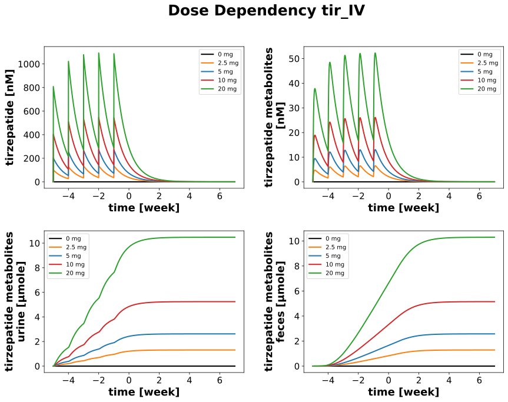

DoseDependencyExperiment
Models
Datasets
Figures
- Fig_dose_dependency_pk_tir_IV: DoseDependencyExperiment_Fig_dose_dependency_pk_tir_IV.svg
- Fig_dose_dependency_pk_tir_SC: DoseDependencyExperiment_Fig_dose_dependency_pk_tir_SC.svg
{kind=link}
Fig_dose_dependency_pk_tir_IV
|  |
Fig_dose_dependency_pk_tir_SC

|
Code
../../../experiments/misc/dose_dependency.py
from typing import Dict
from sbmlsim.plot import Axis, Figure, Plot
from sbmlsim.simulation import Timecourse, TimecourseSim
from pkdb_models.models.tirzepatide.experiments.base_experiment import (
TirzepatideSimulationExperiment,
)
from pkdb_models.models.tirzepatide.helpers import run_experiments
class DoseDependencyExperiment(TirzepatideSimulationExperiment):
"""Tests po application."""
routes = {
"tir": ["IV", "SC"],
}
doses = [0, 2.5, 5, 10, 20] # [mg]
colors = ["black", "tab:orange", "tab:blue", "tab:red", "tab:green"]
def simulations(self) -> Dict[str, TimecourseSim]:
Q_ = self.Q_
tcsims = {}
for substance, routes in self.routes.items():
for route in routes:
for dose in self.doses:
tc0 = Timecourse(
start=0,
end=7 * 24 * 60, # [min] every week
steps=1000,
changes={
**self.default_changes(),
f"{route}DOSE_{substance}": Q_(dose, "mg"),
},
)
tc1 = Timecourse(
start=0,
end=7 * 24 * 60, # [min] every week
steps=1000,
changes={
f"{route}DOSE_{substance}": Q_(dose, "mg"),
},
)
tc2 = Timecourse(
start=0,
end=8 * 7 * 24 * 60, # [min] 8 weeks
steps=1000,
changes={
f"{route}DOSE_{substance}": Q_(dose, "mg"),
},
)
tcsims[f"tir_{substance}_{route}_{dose}"] = TimecourseSim(
[tc0] + [tc1 for _ in range(3)] + [tc2],
time_offset=-5 * 7 * 24 * 60
)
return tcsims
def figures(self) -> Dict[str, Figure]:
return {
**self.figure_pk(),
}
def figure_pk(self) -> Dict[str, Figure]:
figures = {}
for substance, routes in self.routes.items():
for route in routes:
fig = Figure(
experiment=self,
sid=f"Fig_dose_dependency_pk_{substance}_{route}",
num_rows=2,
num_cols=2,
name=f"Dose Dependency {substance}_{route}",
)
plots = fig.create_plots(xaxis=Axis("time", unit="week"), legend=True)
sids = [
# plasma
"[Cve_tir]",
"[Cve_tm]",
# urine,
"Aurine_tm",
# feces
"Afeces_tm",
]
for ksid, sid in enumerate(sids):
if sid:
plots[ksid].set_yaxis(label=self.labels[sid], unit=self.units[sid])
for ksid, sid in enumerate(sids):
if sid:
for kval, dose in enumerate(self.doses):
plots[ksid].add_data(
task=f"task_tir_{substance}_{route}_{dose}",
xid="time",
yid=sid,
label=f"{dose} mg",
color=self.colors[kval],
)
figures[fig.sid] = fig
return figures
if __name__ == "__main__":
run_experiments(DoseDependencyExperiment, output_dir=DoseDependencyExperiment.__name__)